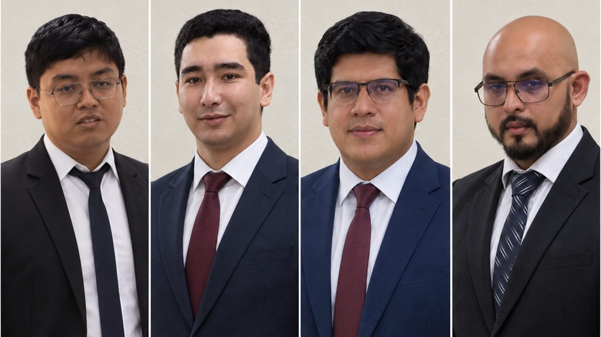

Cuatro bachilleres de la FIEI aprueban sustentaciones y avanzan hacia el título profesional
Los trabajos presentados aplican ingeniería a necesidades de monitoreo, automatización y conectividad.

Cuatro bachilleres de la Facultad aprobaron sus sustentaciones el 11 de setiembre y dieron un paso importante en el proceso para obtener el título profesional.
Los proyectos abordaron soluciones como el monitoreo remoto de una EPS mediante Internet de las cosas, la automatización de una faja transportadora para minería, la conectividad de una empresa de transporte y un sistema SCADA para una subestación.
Las investigaciones muestran cómo los conocimientos adquiridos en la carrera pueden convertirse en propuestas aplicadas a problemas y servicios del entorno.